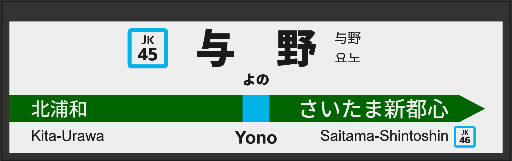

| ←北浦和 | ■ 京浜東北線 | さいたま新都心→ |
|---|
1998年7月に初期型ATOS放送を導入。
2005年2月に旧型に更新され、接近放送の文面が「黄色い線まで～」になる。
2007年10月に発車メロディが1番線は「JR-SH6-1」から「希望のまち09」へ、2番線は「JR-SH6-1」から「JR-SH5-3」に変更される。
2013年2月に常磐改良型に更新される。
2015年10月に宇都宮型に更新され、1番線の声優が津田英治氏から田中一永氏に交代。
2025年2月には宇都宮改良型に更新され、接近放送の文面が「黄色い点字ブロックまで～」に変更されています。
2025年5月には2番線の発車メロディが「JR-SH5-3」から「JRE-IKST-007-2」に変更されています。
| 1 | ■ 京浜東北線 大宮方面 |
1番線次発予告 1番線接近放送 1番線到着放送(2009年3月～4月) |
旧型でした。 放送は「各駅停車 大宮行」です。 |
|---|---|---|---|
| 2 | ■ 京浜東北線 大船方面 |
2番線次発予告 2番線接近放送 2番線到着放送(2009年3月～4月) |
旧型でした。 放送は「」です。 |
| 1 | ■ 京浜東北線 大宮方面 |
1番線発車メロディ（JR-SH6-1） |
発車メロディ変更前でした。 |
|---|---|---|---|
| 2 | ■ 京浜東北線 大船方面 |
2番線発車メロディ（JR-SH6-1） |
発車メロディ変更前でした。 |
| 1 | ■ 京浜東北線 大宮方面 |
1番線接近放送 |
初期型で、接近放送の文面が「黄色い線の内側まで～」でした。 放送は「」です。 |
|---|---|---|---|
| 2 | ■ 京浜東北線 大船方面 |
2番線接近放送 |
初期型で、接近放送の文面が「黄色い線の内側まで～」でした。 放送は「」です。 |
| 1 | ■ 京浜東北線 大宮方面 |
1番線接近放送 |
文面がさらに継ぎ接ぎでした。 放送は「各駅停車 大宮行」です。 |
|---|---|---|---|
| 2 | ■ 京浜東北線 大船方面 |
2番線接近放送 |
文面がさらに継ぎ接ぎでした。 放送は「各駅停車 桜木町行」です。 |